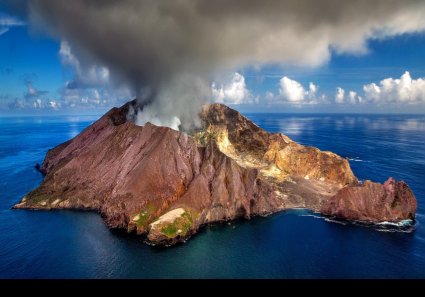

Earth’s Major Systems
Earth’s major systems are the geosphere (solid and molten rock, soil, and sediments), the hydrosphere (water and ice), the atmosphere (air), and the biosphere (living things, including humans).
These systems interact in multiple ways.
Weathering and erosion are examples of interactions between Earth’s systems.
Some interactions cause landslides, earthquakes, and volcanic eruptions that impact humans and other organisms.
Humans cannot eliminate natural hazards; solutions can be designed to reduce their impact.

Image by Julius Silver, pixabay.com, CC0